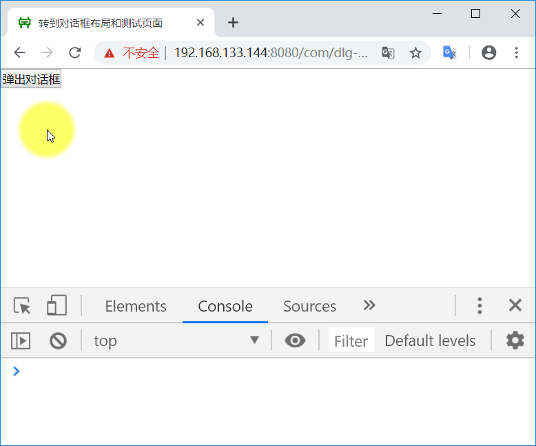
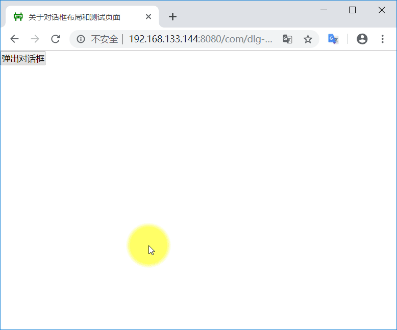

第 6 章：自定义 UI 组件
1. 阅读参考资料
2. 矩形计算器 v1.2
基本要求：
- 进一步完善 rectangle 仓库代码
- 在界面的右上角增加 fork-me-on-github UI 组件
- 在界面的右下角增加网站计数器 UI 组件
- 两个组件的网址如下：
http://i.wangding.co/js/fork-me-github.js http://i.wangding.co/js/bsz-page-footer.js
示例参考：
3. 定时器按钮组件
基本要求：
- 在 spa 仓库创建 41-timer-button 目录
- 封装定时器按钮组件
- 封装后的代码文件包括：一个 js 文件和一个 css 文件
- 定时器按钮支持两种应用场景
- 场景一：初始状态禁用，倒计时后，按钮启用，启用后按钮可以点击，点击后按钮一直处于启用状态
- 场景二：初始状态启用，点击按钮后，按钮禁用，倒计时，倒计时结束后，按钮启用，循环往复
- 创建定时器按钮时，可以通过参数初始化：
- container：创建定时器按钮的容器
- tLength：定时器时长
- enable：定时器按钮的初始状态
- title：定时器按钮的文字
- 定时器按钮启用状态，被点击时，执行个性化的事件处理，而不是写死在组件中的事件处理
- 编写定时器按钮的测试页面
示例参考：
4. 密码可见组件
基本要求：
- 在 spa 仓库创建 42-password-visual 目录
- 封装密码可见组件
- 封装后的代码文件包括：一个 js 文件和一个 css 文件
- 创建密码可见组件时，可以通过参数初始化：
- container: 创建密码可见组件的容器
- 密码可见组件暴露一个 getPwd 方法，返回密码明文
- 编写密码可见组件的测试页面
示例参考：
5. jsnotepad 转到对话框
基本要求：
- 在 GitHub 上创建 jsnotepad 项目仓库
- 实现 grunt 自动化构建，包括：静态代码检查、单元测试和性能优化构建任务
- 打开 win10 notepad 程序，调出转到对话框
- 把转到对话框屏幕截图，测量对话框中各个控件的位置和尺寸数据，参考下图：

- 根据上面测量的数据，编写转到对话框组件的 CSS 样式表
- 后续作业任务中的 jsnotepad 界面组件的样式表文件的编写，于此类似
- 实现转到对话框
- 转到对话框的样式以及功能参考 win10 的记事本程序
- 转到对话框要实现字符级和集中数据合法性校验
- 错误信息气泡提示框的实现，请参考：制作 CSS 气泡框
- 转到对话框要实现参数初始化
- 编写测试页面，测试转到对话框，如下图所示：

示例参考：
6. jsnotepad 关于对话框
基本要求：
- 实现关于对话框
- 关于对话框的样式、内容以及功能参考 win10 的记事本程序
- 编写测试页面，测试关于对话框，如下图所示：

示例参考：
7. jsnotepad 查找对话框
基本要求：
- 实现查找对话框
- 查找对话框的样式以及功能参考 win10 的记事本程序
- 编写测试页面，测试查找对话框
示例参考：
8. jsnotepad 查找替换对话框
基本要求：
- 实现查找替换对话框
- 查找替换对话框的样式以及功能参考 win10 的记事本程序
- 编写测试页面，测试查找替换对话框
示例参考：
9. jsnotepad 列表框组件
基本要求：
- 实现字体对话框中的列表框组件
- 列表框组件的样式以及功能参考 win10 的记事本程序
- 编写测试页面，测试列表框组件，如下图所示

示例参考：
10. jsnotepad 字体对话框
基本要求：
- 实现字体对话框
- 字体对话框的样式以及功能参考 win10 的记事本程序
- 编写测试页面，测试字体对话框
示例参考：
11. jsnotepad 状态栏
基本要求：
- 实现状态栏
- 状态栏的样式、内容以及功能参考 win10 的记事本程序
- 编写测试页面，测试状态栏组件
示例参考：
12. jsnotepad 菜单栏
基本要求：
- 实现菜单栏
- 菜单栏的样式、内容以及功能参考 win10 的记事本程序
- 编写测试页面，测试菜单栏组件
示例参考：
13. jsnotepad 文本编辑组件
基本要求：
- 实现主窗体区域的文本编辑组件
- 文本编辑组件的样式以及功能参考 win10 的记事本程序
- 编写测试页面，测试文本编辑组件
示例参考：